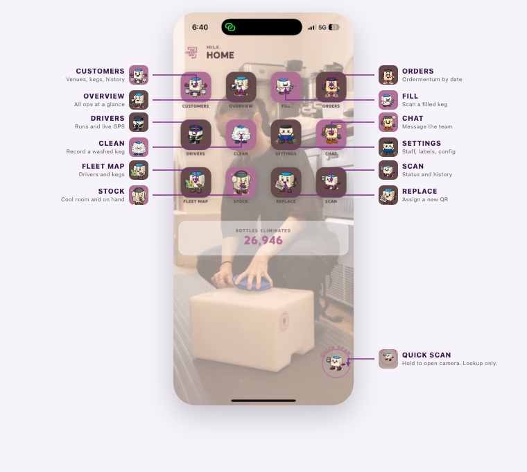
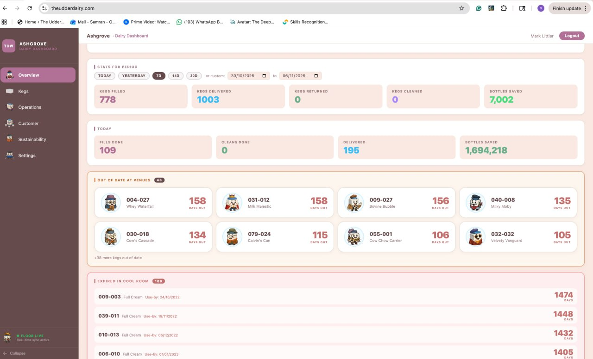
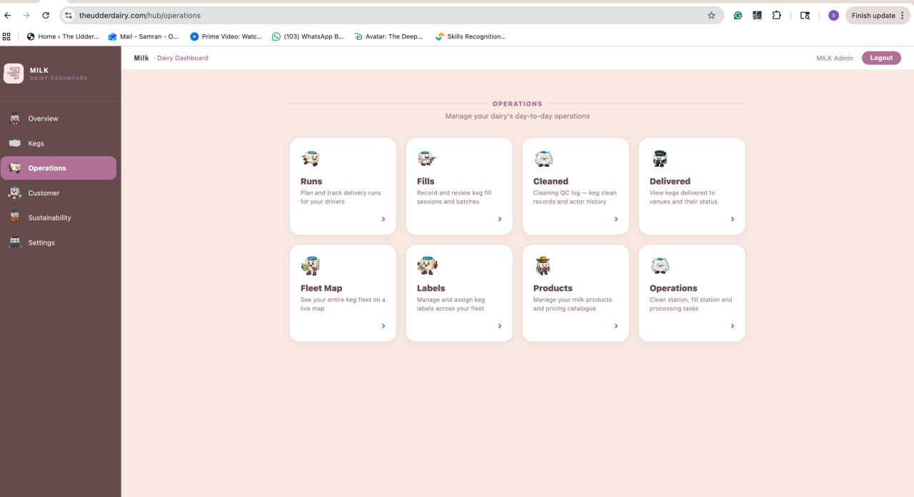

The Udder Way
One system.
Four apps.
Every keg.
The Udder Way is a keg management platform built for dairy operations. It connects the dairy, drivers, and venues in a single live system — so you always know where every keg is, what went into it, and when it was last touched.
No spreadsheets. No calls to track a keg. Every scan leaves a permanent record. Every fill is fingerprinted. Every delivery is confirmed the moment it happens.
What stays the same
Every keg has a QR code. That code is its identity. Scan it to fill, clean, deliver, collect, or look it up. The history never disappears.
How it connects
A scan on the driver's phone updates the dairy app and dashboard in seconds. All four parts run on the same live data.
No module matches that search.
Start here
A keg goes out full. It comes home empty. Then it goes again.
Every step is a scan. Every scan is a record. The cycle repeats for the life of the keg.

Step 1 — Wash
Status: Needs Cleaning → Ready to Fill
Step 2 — Fill
Status: Ready to Fill → Filled
Step 3 — Stock Check
Status: Filled (in cool room)
Step 4 — Order
Step 5 — Build the Run
Status: Filled → Picked Up (on the truck)
Step 6 — Delivery
Status: Picked Up → At Venue
Step 7 — At the Venue
Status: At Venue → Empty (when finished)
Step 8 — Collection
Status: Empty → Needs Cleaning
Step 9 — Quarantine (when required)
Status: Quarantined → (admin release) → Needs Cleaning
Keg Status Reference
| Status | What it means | Next step |
|---|---|---|
| Ready to Fill | Clean, in the fill queue | Fill it |
| Filled | In the cool room | Put it on a run |
| Picked Up | On the truck | Driver delivers it |
| At Venue | On tap at the venue | Watch the use-by. Collect when empty. |
| Empty | Finished, still at the venue | Collect on the next run |
| Needs Cleaning | Home, not washed | Wash it, then scan Clean |
| Quarantined | Out of circulation | Admin releases it back to cleaning |
The Udder Dairy
Everything the dairy needs, one tap away.
The Dairy app is the control centre for the whole operation. Dairy staff use it to wash and fill kegs, check stock, and prepare runs. Admins manage orders, build runs, oversee drivers, and handle customer accounts. Super admins have full access including staff management and settings.
This is the only app where kegs are created, filled, and dispatched. Everything else in the platform responds to what happens here.

Clean — after every wash
Scan a keg as Clean after washing it. The camera opens automatically — point it at the QR and it reads itself. Confirm, and the scanner stays open for the next keg. This is the gating step: a keg not scanned Clean will not appear in the fill queue.

Fill — after every wash cycle
Tap Fill. Select the product first (Full Cream — blue lid; Lite — pink lid). Scan the QR. The app sets the use-by automatically from your product settings. Take the operator photo. Confirm. The keg moves into the cool room.
The fill record is permanent: product, use-by, operator, timestamp. This is the record you check if a venue ever queries a keg.
Stock — daily
Three buckets: Cool Room (filled, ready to go), Clean (washed, waiting to fill), Ordered (what venues have requested). Each cool room batch shows product, use-by, days remaining, and keg IDs. Pull any keg at zero days — do not deliver it.
Overview — every morning
The morning picture: kegs at venues, empties waiting, kegs that need a wash, kegs ready to fill, what is going out today. The Activity tab is the full event log — fills, cleans, deliveries — with the person who did each one. Use it when someone asks what happened yesterday.

Orders — delivery days
Orders come from Ordermentum and appear here automatically — no manual entry. Grouped by delivery date. Tuesday orders close Monday evening; Friday orders close Thursday evening. Compare product totals against the cool room before building a run.
Drivers & Fleet Map — delivery days
Build the run: add stops in route order, assign the driver, start it when the truck leaves. As the driver scans each stop, the dairy app updates in real time. The Fleet Map shows the same run on a map — live driver position and venue pins for kegs already out.

Customers — ongoing
Every venue you supply. Open one to see kegs on site, empties waiting, and whether it is a standard venue or a vendor. A Vendor receives kegs outside the standard collection path — the driver app treats those as a straight delivery rather than a collection event.
Scan / History / Replace / Quarantine — as needed
Quick Scan: Hold the round button on the home screen. Lookup only — does not fill, clean, or deliver.
History: Every scan on the keg, in order.
Replace: Damaged label, same keg. Print a new one, link it. History carries over.
Quarantine: Removes from circulation immediately. Admin-only release. Returns to Needs Cleaning.
Staff — admin setup
| Role | App | Can do |
|---|---|---|
| Factory | Dairy | Fill, clean, scan |
| Driver | Driver | Today's run, deliver/collect scans, chat |
| Admin | Dairy | Customers, orders, runs, stock, reports |
| Super Admin | Dairy | Everything above, plus staff and settings |
Factory and Driver staff log in with a PIN. Admin and Super Admin use email and password.
Weekly rhythm
| Day | What happens |
|---|---|
| Monday | Tuesday orders close in the evening. Check cool room against order totals. Fill if short. |
| Tuesday | Run the deliveries. Collect empties on the same run. |
| Wednesday | Wash what came home Tuesday. Start filling for Friday. |
| Thursday | Friday orders close in the evening. Finish filling. Build Friday's run. |
| Friday | Second run. Same as Tuesday. |
| Weekend | Wash Friday's empties. Review the week on Overview. |
The Udder Driver
The driver only sees today's work.
The Driver app is for delivery drivers. It shows only what the driver needs for today — their run, their stops, and the scan button. Nothing else. Drivers do not see other runs, other drivers, or the dairy's internal operations. The dairy builds the run; the driver executes it.
Deliveries
Today's outstanding stops appear here. Each stop shows the venue name, kegs to drop, and empties to collect. Completed stops are marked off as the driver scans them.
Scan — the core job
Open a stop, tap Scan. The camera opens. Scan each keg you are leaving — status changes to At Venue. Scan each empty you are collecting — status changes to Needs Cleaning. The dairy sees it happen in real time. Finish the stop and the next venue opens on the map with directions and an ETA.
Runs
Today's assigned run with all stops in order. Each stop shows how far away it is and an estimated travel time.
Chat
Message the dairy or a venue directly. All parties can see the thread.
The Udder Venue
The venue does not need a training day.
The Venue app is for any venue that receives milk kegs — cafés, restaurants, bars, retailers, or any other on-tap location. It gives the venue visibility over their own stock, their incoming deliveries, and their order history. No training required. The app is built for venue staff, not operations managers.
A venue only sees their own place. They do not see other venues or the dairy's internal operations.
Deliveries
Shows upcoming deliveries with the driver's name, ETA in minutes, and how many kegs are on the truck. Completed deliveries show timestamps and keg IDs. The venue can see the driver approaching before the knock on the door.
Orders
Select product and quantity, pick the delivery day, submit. The order flows to Ordermentum and appears in the dairy's Orders screen automatically. No call or email needed. Deadlines: Tuesday delivery by Monday evening, Friday delivery by Thursday evening.
Stock
Kegs currently on site. Each full keg shows: product type, use-by date, days remaining, and how long it has been at the venue. If a keg is showing zero days or close to it, contact the dairy or flag it in Chat.
History
A record of every past delivery and collection. Use it to verify that an order was received or a keg was returned.
Chat
Message the dairy or today's driver. Use this for delivery questions, keg issues, or anything time-sensitive.
Staff
Add or remove venue staff, assign PINs. Venue staff log in with a PIN — no email login required.
Dashboard
The same story, on a computer.
The Dashboard at theudderdairy.com is for owners and managers who want the bigger picture — the week, the month, the whole fleet — on a large screen. Phone scans do the work. The dashboard shows the results.
Use it at your desk to review the week, check on a specific keg, audit operations, or pull a sustainability number for a venue conversation.
Overview
What happened today and over a selected period: kegs filled, out, back; bottles replaced; delivery activity; staff events. Switch between today, this week, and this month using the period selector at the top.

Kegs
Find any keg by ID or status. Open it to read its full fingerprint: current status, venue location, use-by date, fill history, and every scan in order. Use this when a venue asks about a specific keg or when investigating a quality or logistics issue.
Operations
The full log of fills, cleans, deliveries, and runs. Filterable by date, event type, or staff member. Use it to audit what happened on a specific day or verify a run was completed.

Customer
Venues and what they are holding. Click a venue to see current kegs on site, empties waiting for collection, order history, and contact details.
Sustainability
Bottles replaced — each keg delivered replaces a set number of single-use bottles. This screen shows the cumulative count by period, by venue, or across the whole operation. This is the number you show a venue when they ask about their environmental impact.
Settings
Products, staff, label templates, and dairy details — the same configuration available in the Dairy app, on a larger screen. Changes here apply across the whole platform.
After you say yes
We set it up. You pour milk.
- Your dairy
Name, products, delivery days, staff. We load the kegs you already have into the system. - Your people
Dairy logins, driver PINs, venue PINs. Each person gets the right app. Factory staff get the Dairy app. Drivers get the Driver app. Venues get the Venue app. - First run
Fill, deliver, collect, clean. Watch it on the phone and on the dashboard. The cycle runs itself from here.